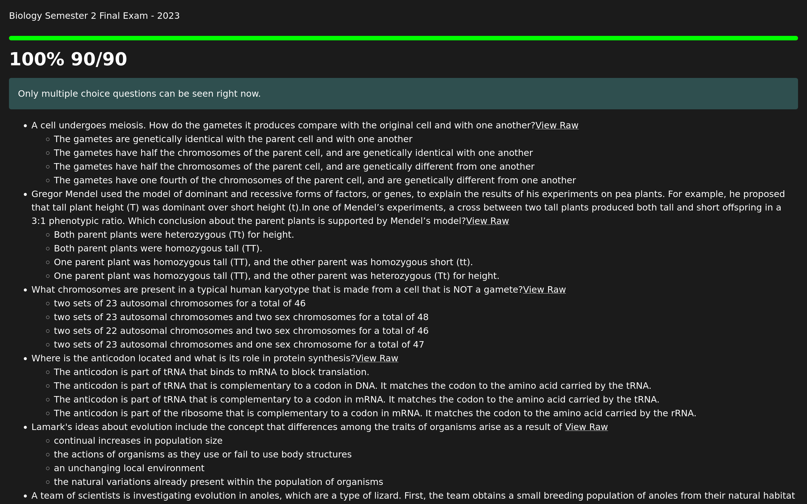

Edulastic Grade Revealer
This script can show the score you got on an Edulastic assignment, even
if the grades haven't been released yet. It now also has the ability to
show some of the questions on the test, even if the test is not open
yet.
-
Drag
this link
into your bookmarks bar
-
Go to the results page for the assignment (Not the assignment
list)
- Click the bookmark
The script has been recently updated, and unfortunately it is not
compatible with the way the previous version was loaded. If you are
using the previous script, you will need to update it. In the
future, new versions will automatically update.
